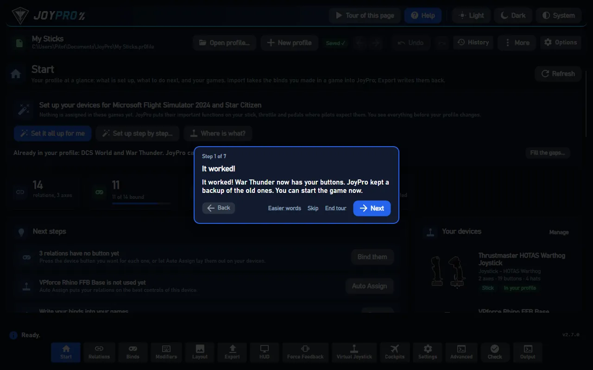

Du vil at styrespaken skal virke i spillet ditt. Du vil ikke lære JoyPro først. Denne siden er for deg.
JoyPro ser på styrespaken, gasshendelen og pedalene dine. Det legger de viktige spillkontrollene på dem av seg selv. Du ser på resultatet og klikker to blå knapper. Det er alt.
- Sett opp alt for meg
på Start-siden - Bruk disse knappene
i det nye vinduet - Skriv til spillet mitt
den neste blå knappen - Fly
start spillet ditt
#Før du starter
- Last ned JoyPro og pakk det ut: Last ned og installer.
- Koble til styrespaken, gasshendelen og pedalene dine.
- Start spillet ditt én gang og lukk det. Noen spill lager kontrollfilene sine først da.
- Hold spillet lukket mens JoyPro skriver til det.
#Den raske veien, steg for steg
- Start JoyPro. Første gang viser et vindu spillene dine. Trykk Ferdig, og sett opp alt for meg. Da kan du hoppe over steg 2.
- Trykk Sett opp alt for meg. Du finner den på Start, i kortet «Sett opp enhetene dine». Svaret Bare få styrespaken min til å virke i velkomsten (JoyPros første spørsmål etter første oppstart) gjør det samme.
- Se på listen. Den sier hva hver knapp gjør, for eksempel «Knapp 4: Lad om våpen». Vis bildet stort viser styrespaken din med alle knappene.
- Trykk Bruk disse knappene. Nå har JoyPro knappene dine. Spillet ditt endres ikke ennå.
- Trykk Skriv til spillet mitt. Nå har spillet ditt knappene dine. JoyPro tar vare på en kopi av de gamle.
- Fly. Start sier «Det virket!». Start spillet ditt og fly.


Bare én knapp er blå om gangen. Klikk den blå, så blir den neste blå.
#Spørsmålet om hodesporing
For en flysimulator spør listen: Bruker du hodesporing eller VR? Svar Ja hvis du ser deg rundt ved å bevege hodet (TrackIR, et webkamera med ansiktssporing, Tobii eller VR), eller planlegger det. Da havner ingen blikkknapper på styrespaken din, bare «sentrer visningen». Svar Nei hvis du ser deg rundt med styrespaken: en hat får det å se seg rundt. Se Hodesporing og å se seg rundt.
«Alle viktige knapper er satt opp. Noen sjeldne ekstrafunksjoner fikk ikke plass (18). Det går fint.» Dette er gode nyheter. Styrespaken din har færre knapper enn spillet har kontroller. De viktige ligger alle på styrespaken din.
#Spillet har allerede knapper
Har du satt opp knapper i spillet før? Da stiller Skriv til spillet mitt ett spørsmål:
| Svar | Hva som skjer |
|---|---|
| Bruk de nye | JoyPros knapper erstatter de gamle. JoyPro tar vare på en kopi av de gamle. |
| Behold de gamle også | De nye knappene dine legges ved siden av de gamle. Ingenting fjernes. |
| Avbryt | Ingenting skrives. Trykk Skriv til spillet mitt igjen når du er klar. |



#ACE COMBAT og andre spill som bare støtter Xbox
ACE COMBAT 8 og Hell Let Loose: Vietnam kjenner bare en Xbox-kontroller. De ser ikke styrespaken din. JoyPro gjør styrespaken din om til en liksomkontroller (en virtuell Xbox-kontroller). Ingenting skrives inn i disse spillene.
- Sett opp alt for meg
deretter Bruk disse knappene - Sett opp liksomkontrolleren
den andre blå knappen - Test
beveg styrespaken - Start spillet
vent på tittelskjermen - Alt+Tab, Start
og så Alt+Tab tilbake
- Trykk Sett opp alt for meg, deretter Bruk disse knappene.
- Den neste blå knappen er Sett opp liksomkontrolleren. Siden Virtuell joystick åpnes.
- Første gang trengs et gratis hjelpeprogram som heter ViGEmBus. Kryss av boksen under lisensen. Trykk så Installer ViGEmBus. Windows ber om tillatelse: klikk Ja.
- Trykk Test. Beveg styrespaken. Bildet av kontrolleren beveger seg også.
- Start spillet. Vent på tittelskjermen.
- Hold Alt nede og trykk Tab. Du er tilbake i JoyPro. Trykk Start.
- Trykk Alt+Tab igjen. Du er tilbake i spillet. Fly!
Trykk på Start først når spillet viser tittelskjermen. For tidlig? JoyPro sier «For tidlig». Trykk på Stopp, deretter Start. Gjør dette hver gang du spiller.
Mer om disse spillene: Spill et spill som bare støtter Xbox, med HOTAS og ACE COMBAT.
#Gikk noe galt?
- Fant ingen spill eller styrespak. Koble til styrespaken, eller start spillet ditt én gang. Trykk så Prøv igjen.
- Du vil velge mer selv. Trykk Sett opp trinn for trinn. Det åpner oppsettveiviseren med alle trinnene.
- Du vil ha de gamle knappene tilbake. Se Angre hurtigoppsettet.
- Du vil ha en annen knapp for én ting. Se Endre én knapp senere.
#Enkle ord
Vil du ha stor tekst og veldig korte setninger? Kryss av for Enkle ord: stor tekst, korte setninger i velkomsten eller i det første vinduet. Hvert omvisningskort har også Enklere ord. Se Enkle ord, omvisninger og F1.
#Hva hurtigoppsettet gjør
- Det er oppsettveiviseren som kjører av seg selv. Den bruker standardvalgene sine: enhetene dine og de vanlige oppgavene deres, alle fly likestilt, ingen modifikator.
- Det setter bare opp spillene der ingenting ligger på styrespakene dine ennå. Kortet på Start nevner dem: «Sett opp enhetene dine for War Thunder og Star Citizen».
- Hvor skal funksjonene ligge? kommer fra det siste valget ditt i veiviseren (midten første gang). Se Hvor skal funksjonene ligge?.
- En enhet JoyPro ikke kjenner, settes opp som en vanlig enhet av samme slag. Å bevege styrespaken styrer, knapp 1 skyter, den første hat-en trimmer, den første hendelen er gassen. Boksen øverst sier det.
- Endre noe viser verktøyene: flytt, bytt eller utelat en funksjon, og legg den tilbake. Den viser også hva som ikke fikk plass.
- Spill der du har laget tilordninger selv, vises under kortet. Importer, fyll så hullene tar inn tilordningene dine først; deretter bruker oppsettet bare de ledige kontrollene. Spill som allerede er i profilen din, får Fyll hullene....
- Bruk disse knappene er ett steg i profilhistorikken. Én Angre (Ctrl+Z) tar alt tilbake.
- Skriv til spillet mitt er en eksport av disse spillene. Den sikkerhetskopierer spillfilene først, som Eksport-siden.
- Etterpå viser en kort omvisning hvor du endrer en knapp senere. Den slutter med «Ferdig! Start spillet ditt».
#Bak hurtigoppsettet
Den raske veien kjører motorstegene i veiviseren uten å vise dem: engine setup devices, engine setup aircraft og engine setup plan fram til gjennomgangen. Bruk disse knappene kjører engine setup apply (én profilversjon). Skriv til spillet mitt kjører spillets eksport med innstillingene og sikkerhetskopien fra Eksport-siden. For spill som bare støtter kontroller, åpner den i stedet siden Virtuell joystick; tabellen deres kommer fra engine vjoy map. GUI: QuickSetupCommand på Start, StartQuickSetupAsync (MainWindowViewModel.AutoSetupStart.cs), vinduet Views/SetupWizardWindow.axaml.
#Relatert
- Din første profil på 10 minutter: den raske veien og veien for hånd
- Hjelpemodus og omvisninger: velkomsten og svarene der
- Hjelp og vanlige spørsmål